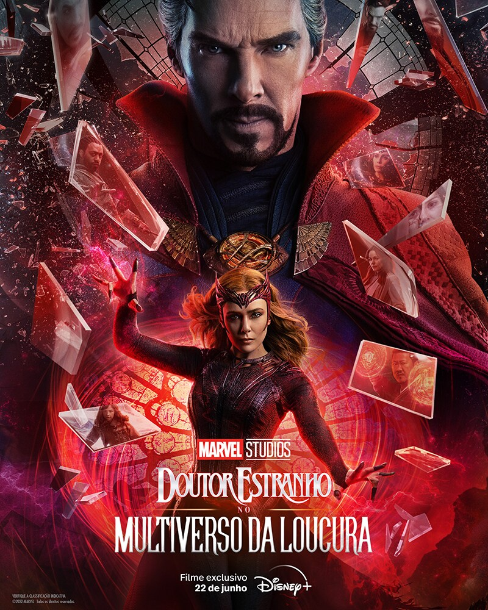

Personagens Principais
Em "Doutor Estranho no Multiverso da Loucura", temos vários personagens principais:
- Doutor Estranho - Interpretado por Benedict Cumberbatch. Um dos maiores heróis do MCU, ele explora os mistérios do multiverso.
- Wanda Maximoff (Feiticeira Escarlate) - Interpretada por Elizabeth Olsen. Ela se torna uma ameaça ao multiverso devido ao seu poder e à busca pela família perdida.
- America Chavez - Interpretada por Xochitl Gomez. Uma jovem heroína com a habilidade de viajar entre os universos. 